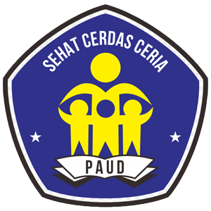
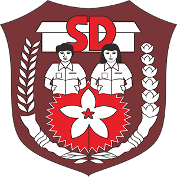
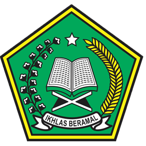
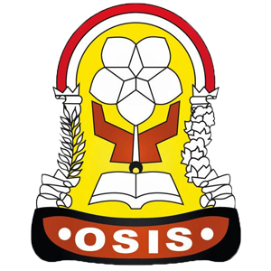
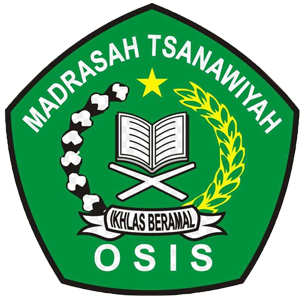
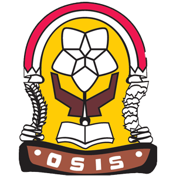
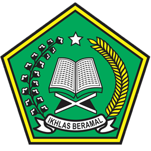

Apa itu Pendidikan di Indonesia?
Pendidikan di Indonesia adalah seluruh pendidikan yang diselenggarakan di Indonesia, baik itu secara terstruktur maupun tidak terstruktur.
Secara terstruktur, pendidikan di Indonesia menjadi tanggung jawab Kementerian Pendidikan dan Kebudayaan Republik Indonesia (Kemdikbud), dahulu bernama Departemen Pendidikan Nasional Republik Indonesia (Depdiknas). Di Indonesia, semua penduduk wajib mengikuti program wajib belajar pendidikan dasar selama sembilan tahun, enam tahun di sekolah dasar dan tiga tahun di sekolah menengah pertama.
Saat ini, pendidikan di Indonesia diatur melalui Undang-Undang Nomor 20 Tahun 2003 tentang Sistem Pendidikan Nasional.
Pendidikan juga dibagi ke dalam empat jenjang, yaitu anak usia dini, dasar, menengah, dan tinggi.Jenjang pendidikan adalah tahapan pendidikan yang ditetapkan berdasarkan tingkat perkembangan peserta didik, tujuan yang akan dicapai, dan kemampuan yang dikembangkan.
Pendidikan Usia Dini

Mengacu Undang-undang Nomor 20 Tahun 2003, Pasal 1 Butir 14 tentang Sistem Pendidikan Nasional, Pendidikan anak usia dini (PAUD) adalah suatu upaya pembinaan yang ditujukan bagi anak sejak lahir sampai dengan usia enam tahun yang dilakukan melalui pemberian rangsangan pendidikan untuk membantu pertumbuhan dan perkembangan jasmani dan rohani agar anak memiliki kesiapan dalam memasuki pendidikan lebih lanjut.
Dari kelahiran sampai usia 3 tahun, kanak-kanak Indonesia pada umumnya tidak memiliki akses terhadap pendidikan formal. Dari usia 3 sampai 4 atau 5 tahun, mereka memasuki taman kanak-kanak. Pendidikan ini tidak wajib bagi warga negara Indonesia, tujuan pokoknya adalah untuk mempersiapkan anak didik memasuki sekolah dasar. Dari 49.000 taman kanak-kanak yang ada di Indonesia, 99,35% diselenggarakan oleh pihak swasta. Periode taman kanak-kanak biasanya dibagi ke dalam Kelas A
(atau Nol Kecil) dan Kelas B
(atau Nol Besar), masing-masing untuk periode satu tahun.
Pendidikan Dasar
Pendidikan dasar merupakan jenjang pendidikan awal selama 9 (sembilan) yaitu Sekolah Dasar (SD) selama 6 tahun dan Sekolah Menengah Pertama (SMP) selama 3 tahun. Pendidikan dasar merupakan Program Wajib Belajar.
Sekolah Dasar


Kanak-kanak berusia 6–11 tahun memasuki sekolah dasar (SD) atau madrasah ibtidaiyah (MI). Tingkatan pendidikan ini adalah wajib bagi seluruh warga negara Indonesia berdasarkan konstitusi nasional. Tidak seperti taman kanak-kanak yang sebagian besar di antaranya diselenggarakan pihak swasta, justru sebagian besar sekolah dasar diselenggarakan oleh sekolah-sekolah umum yang disediakan oleh negara (disebut "sekolah dasar negeri" atau "madrasah ibtidaiyah negeri"), terhitung 93% dari seluruh sekolah dasar/madrasah ibtidaiyah yang ada di Indonesia.
Sama halnya dengan sistem pendidikan di Amerika Serikat dan Australia, para siswa harus belajar selama enam tahun untuk menyelesaikan tahapan ini. Beberapa sekolah memberikan program pembelajaran yang dipercepat, di mana para siswa yang berkinerja bagus dapat menuntaskan sekolah dasar selama lima tahun saja.
Sekolah Menengah Pertama


Sekolah menengah pertama (SMP) dan madrasah tsanawiyah (MTs) adalah bagian dari pendidikan dasar di Indonesia. Setelah tamat dari SD/MI, para siswa dapat memilih untuk memasuki SMP atau MTs selama tiga tahun pada kisaran usia 12-14. Setelah tiga tahun dan tamat, para siswa dapat meneruskan pendidikan mereka ke sekolah menengah atas (SMA), sekolah menengah kejuruan (SMK), atau madrasah aliyah (MA).
Pendidikan Menengah


Pendidikan menengah merupakan jenjang pendidikan lanjutan pendidikan dasar, yaitu Sekolah Menengah Atas (SMA) selama 3 tahun waktu tempuh pendidikan.
Di Indonesia, pada tingkatan ini terdapat tiga jenis sekolah, yaitu sekolah menengah atas (SMA), sekolah menengah kejuruan (SMK), dan madrasah aliyah (MA). Siswa SMA dipersiapkan untuk melanjutkan pendidikannya di perguruan tinggi, sedangkan siswa SMK dipersiapkan untuk dapat langsung memasuki dunia kerja tanpa melanjutkan ke tahapan pendidikan selanjutnya. Madrasah aliyah pada dasarnya sama dengan sekolah menengah atas, tetapi porsi kurikulum keagamaannya (dalam hal ini Islam) lebih besar dibandingkan dengan sekolah menengah atas. Jumlah sekolah menengah atas di Indonesia sedikit lebih kecil dari 9.000 buah.
Pendidikan Tinggi
Pendidikan tinggi adalah jenjang pendidikan setelah pendidikan menengah yang mencakup program pendidikan diploma, sarjana, magister, doktor, dan spesialis yang diselenggarakan oleh perguruan tinggi.
Setelah tamat dari sekolah menengah atas atau madrasah aliyah, para siswa dapat memasuki perguruan tinggi. Pendidikan tinggi di Indonesia dibagi ke dalam dua kategori: yakni negeri dan swasta. Kedua-duanya dipandu oleh Kementerian Pendidikan Nasional. Terdapat beberapa jenis lembaga pendidikan tinggi; misalnya universitas, sekolah tinggi, institut, akademi, dan politeknik.
Ada beberapa tingkatan gelar yang dapat diraih di pendidikan tinggi, yaitu Diploma 3 (D3), Diploma 4 (D4), Strata 1 (S1), Strata 2 (S2), dan Strata 3 (S3).
| Jenis Tingkatan |
Gelar |
| D3 |
Ahli Madya |
| D4 |
Sarjana |
| S1 |
Sarjana |
| S2 |
Magister |
| S3 |
Doktor |